Письмо · сингл

Письмо · сингл
Знаешь, меня одно время вдохновляла мысль о том, что даже находясь в разных городах, мы можем поднять глаза к небу и увидеть одни и те же звёзды и луну.
О том, что где-то по очереди гаснут окна, в которых обязательно есть люди, думающие так же.
Потом я познакомился с тобой и написал эту песню.
В ней немного меня, немного тебя и много той мысли, которая в итоге стала чем-то вполне осязаемым.
Надеюсь, что ты услышишь её где-нибудь случайно и сразу узнаешь.
LANI LOUD
Мы встретились в разных городах За сотни километров друг от друга Случайность — это тоже судьба Так, если подольше подумать И большая, круглая Земля Крутится у нас под ногами Ты как будто чувствуешь меня А я словно всю жизнь тебя знаю
Я не сплю из-за тебя Ты не спишь из-за меня Мы на балконах Смотрим в одно небо
Август ночной И я останусь с тобой Даже на расстоянии — возле Август ночной И я останусь с тобой В этом месяце падают звёзды
Твоё имя в памяти моей — Ранняя, тёплая осень Моё имя, может быть, теплей Если его ты произносишь И я бы мог тогда тебя узнать Словно своё отражение Ведь мы ходили по одним местам Жаль только в разное время
Из миллионов твой взгляд Я отыщу наугад Мы на балконах Смотрим в одно небо
Август ночной И я останусь с тобой Даже на расстоянии — возле Август ночной И я останусь с тобой В этом месяце падают звёзды
они слышали все наши просьбы